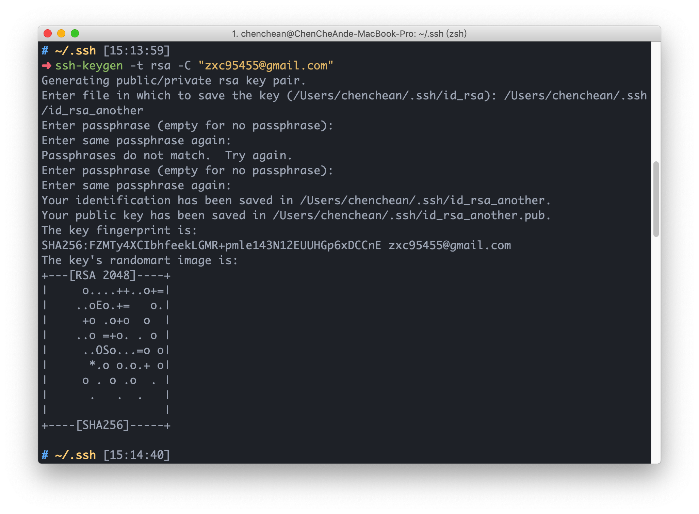

<!DOCTYPE html>
<html lang="en">
<head>
  <meta charset="UTF-8">
<meta name="viewport" content="width=device-width, initial-scale=1, maximum-scale=2">
<meta name="theme-color" content="#222">
<meta name="generator" content="Hexo 5.4.0">
  <link rel="apple-touch-icon" sizes="180x180" href="/images/apple-touch-icon-next.png">
  <link rel="icon" type="image/png" sizes="32x32" href="/images/favicon-32x32-next.png">
  <link rel="icon" type="image/png" sizes="16x16" href="/images/favicon-16x16-next.png">
  <link rel="mask-icon" href="/images/logo.svg" color="#222">

<link rel="stylesheet" href="/css/main.css">


<link rel="stylesheet" href="/lib/font-awesome/css/all.min.css">

<script id="hexo-configurations">
    var NexT = window.NexT || {};
    var CONFIG = {"hostname":"dasre.github.io","root":"/","scheme":"Mist","version":"7.8.0","exturl":false,"sidebar":{"position":"left","display":"post","padding":18,"offset":12,"onmobile":false},"copycode":{"enable":true,"show_result":false,"style":null},"back2top":{"enable":true,"sidebar":false,"scrollpercent":false},"bookmark":{"enable":false,"color":"#222","save":"auto"},"fancybox":false,"mediumzoom":false,"lazyload":false,"pangu":false,"comments":{"style":"tabs","active":null,"storage":true,"lazyload":false,"nav":null},"algolia":{"hits":{"per_page":10},"labels":{"input_placeholder":"Search for Posts","hits_empty":"We didn't find any results for the search: ${query}","hits_stats":"${hits} results found in ${time} ms"}},"localsearch":{"enable":false,"trigger":"auto","top_n_per_article":1,"unescape":false,"preload":false},"motion":{"enable":true,"async":false,"transition":{"post_block":"fadeIn","post_header":"slideDownIn","post_body":"slideDownIn","coll_header":"slideLeftIn","sidebar":"slideUpIn"}}};
  </script>

  <meta name="description" content="多Github帳號設定透過Hostname來決定使用哪一組帳號的SSH Key進行溝通。 SSH生成首先我們先使用ssh-keygen指令生成金鑰 圖中我們的指令為ssh-keygen -t rsa -C &quot;email@gamil.com&quot;  -t 為加密方法的選擇，我們選擇使用RSA加密 -C 為註解，會加入SSH的金鑰。可做為金鑰持有者的辨識。  輸入上述指令後，會分別詢問">
<meta property="og:type" content="article">
<meta property="og:title" content="一電腦使用多組Github帳號設定">
<meta property="og:url" content="https://dasre.github.io/2020/03/23/Github/index.html">
<meta property="og:site_name" content="Andy Blog">
<meta property="og:description" content="多Github帳號設定透過Hostname來決定使用哪一組帳號的SSH Key進行溝通。 SSH生成首先我們先使用ssh-keygen指令生成金鑰 圖中我們的指令為ssh-keygen -t rsa -C &quot;email@gamil.com&quot;  -t 為加密方法的選擇，我們選擇使用RSA加密 -C 為註解，會加入SSH的金鑰。可做為金鑰持有者的辨識。  輸入上述指令後，會分別詢問">
<meta property="og:locale" content="en_US">
<meta property="og:image" content="https://dasre.github.io/2020/03/23/Github/1.png">
<meta property="article:published_time" content="2020-03-23T07:20:12.000Z">
<meta property="article:modified_time" content="2022-02-28T14:44:58.171Z">
<meta property="article:author" content="Andy Chen">
<meta property="article:tag" content="w3HexSchool">
<meta name="twitter:card" content="summary">
<meta name="twitter:image" content="https://dasre.github.io/2020/03/23/Github/1.png">

<link rel="canonical" href="https://dasre.github.io/2020/03/23/Github/">


<script id="page-configurations">
  // https://hexo.io/docs/variables.html
  CONFIG.page = {
    sidebar: "",
    isHome : false,
    isPost : true,
    lang   : 'en'
  };
</script>

  <title>一電腦使用多組Github帳號設定 | Andy Blog</title>
  


  <noscript>
  <style>
  .use-motion .brand,
  .use-motion .menu-item,
  .sidebar-inner,
  .use-motion .post-block,
  .use-motion .pagination,
  .use-motion .comments,
  .use-motion .post-header,
  .use-motion .post-body,
  .use-motion .collection-header { opacity: initial; }

  .use-motion .site-title,
  .use-motion .site-subtitle {
    opacity: initial;
    top: initial;
  }

  .use-motion .logo-line-before i { left: initial; }
  .use-motion .logo-line-after i { right: initial; }
  </style>
</noscript>

</head>

<body itemscope itemtype="http://schema.org/WebPage">
  <div class="container use-motion">
    <div class="headband"></div>

    <header class="header" itemscope itemtype="http://schema.org/WPHeader">
      <div class="header-inner"><div class="site-brand-container">
  <div class="site-nav-toggle">
    <div class="toggle" aria-label="Toggle navigation bar">
      <span class="toggle-line toggle-line-first"></span>
      <span class="toggle-line toggle-line-middle"></span>
      <span class="toggle-line toggle-line-last"></span>
    </div>
  </div>

  <div class="site-meta">

    <a href="/" class="brand" rel="start">
      <span class="logo-line-before"><i></i></span>
      <h1 class="site-title">Andy Blog</h1>
      <span class="logo-line-after"><i></i></span>
    </a>
  </div>

  <div class="site-nav-right">
    <div class="toggle popup-trigger">
    </div>
  </div>
</div>


<nav class="site-nav">
  <ul id="menu" class="main-menu menu">
        <li class="menu-item menu-item-home">

    <a href="/" rel="section"><i class="fa fa-home fa-fw"></i>Home</a>

  </li>
        <li class="menu-item menu-item-tags">

    <a href="/tags/" rel="section"><i class="fa fa-tags fa-fw"></i>Tags</a>

  </li>
        <li class="menu-item menu-item-archives">

    <a href="/archives/" rel="section"><i class="fa fa-archive fa-fw"></i>Archives</a>

  </li>
  </ul>
</nav>


</div>
    </header>

    
  <div class="back-to-top">
    <i class="fa fa-arrow-up"></i>
    <span>0%</span>
  </div>


    <main class="main">
      <div class="main-inner">
        <div class="content-wrap">
          

          <div class="content post posts-expand">
            

    
  
  
  <article itemscope itemtype="http://schema.org/Article" class="post-block" lang="en">
    <link itemprop="mainEntityOfPage" href="https://dasre.github.io/2020/03/23/Github/">

    <span hidden itemprop="author" itemscope itemtype="http://schema.org/Person">
      <meta itemprop="image" content="/images/avatar.gif">
      <meta itemprop="name" content="Andy Chen">
      <meta itemprop="description" content="">
    </span>

    <span hidden itemprop="publisher" itemscope itemtype="http://schema.org/Organization">
      <meta itemprop="name" content="Andy Blog">
    </span>
      <header class="post-header">
        <h1 class="post-title" itemprop="name headline">
          一電腦使用多組Github帳號設定
        </h1>

        <div class="post-meta">
            <span class="post-meta-item">
              <span class="post-meta-item-icon">
                <i class="far fa-calendar"></i>
              </span>
              <span class="post-meta-item-text">Posted on</span>

              <time title="Created: 2020-03-23 15:20:12" itemprop="dateCreated datePublished" datetime="2020-03-23T15:20:12+08:00">2020-03-23</time>
            </span>
              <span class="post-meta-item">
                <span class="post-meta-item-icon">
                  <i class="far fa-calendar-check"></i>
                </span>
                <span class="post-meta-item-text">Edited on</span>
                <time title="Modified: 2022-02-28 22:44:58" itemprop="dateModified" datetime="2022-02-28T22:44:58+08:00">2022-02-28</time>
              </span>

          
  
  <span class="post-meta-item">
    
      <span class="post-meta-item-icon">
        <i class="far fa-comment"></i>
      </span>
      <span class="post-meta-item-text">Disqus: </span>
    
    <a title="disqus" href="/2020/03/23/Github/#disqus_thread" itemprop="discussionUrl">
      <span class="post-comments-count disqus-comment-count" data-disqus-identifier="2020/03/23/Github/" itemprop="commentCount"></span>
    </a>
  </span>
  
  

        </div>
      </header>

    
    
    
    <div class="post-body" itemprop="articleBody">

      
        <h1 id="多Github帳號設定"><a href="#多Github帳號設定" class="headerlink" title="多Github帳號設定"></a>多Github帳號設定</h1><p>透過Hostname來決定使用哪一組帳號的SSH Key進行溝通。</p>
<h1 id="SSH生成"><a href="#SSH生成" class="headerlink" title="SSH生成"></a>SSH生成</h1><p>首先我們先使用<code>ssh-keygen</code>指令生成金鑰<br></p>
<p>圖中我們的指令為<code>ssh-keygen -t rsa -C &quot;email@gamil.com&quot;</code></p>
<ul>
<li>-t 為加密方法的選擇，我們選擇使用RSA加密</li>
<li>-C 為註解，會加入SSH的金鑰。可做為金鑰持有者的辨識。</li>
</ul>
<p>輸入上述指令後，會分別詢問</p>
<ul>
<li>金鑰存放位置和檔案名稱</li>
<li>是否設置Passphrase（如有輸入，會須重複輸入一次）</li>
</ul>
<p>上述均輸入完畢後，會產生id_rsa和id_rsa.pub（這邊以預設檔名說明）</p>
<ul>
<li>id_rsa 此為私鑰，也就是要自己保管好的密碼。</li>
<li>id_rsa.pub 此為公鑰，也就是對外公開的鑰匙，此會作為與本地端私鑰溝通使用。</li>
</ul>
<hr>
<h1 id="將生成的金鑰複製到Github"><a href="#將生成的金鑰複製到Github" class="headerlink" title="將生成的金鑰複製到Github"></a>將生成的金鑰複製到Github</h1><p>如果使用linux，可以直接使用ssh-copy-id複製。</p>
<p>mac如要使用ssh-copy-id，需使用Homebrew安裝。</p>
<ul>
<li>mac還可以使用pbcopy來複製，指令<code>pbcopy &lt; ~/.ssh/id_rsa.pub</code>。</li>
</ul>
<p>或是去打開檔案複製都可以。</p>
<hr>
<h1 id="設定ssh-config方便選擇對應的git倉庫"><a href="#設定ssh-config方便選擇對應的git倉庫" class="headerlink" title="設定ssh config方便選擇對應的git倉庫"></a>設定ssh config方便選擇對應的git倉庫</h1><p>在金鑰該層目錄，新增一config檔案。</p>
<p>可以使用<code>nano</code>或<code>vim</code>之類編輯都可以，看個人習慣。</p>
<p><code>nano ~/.ssh/config</code></p>
<p>新增下列資訊</p>
<figure class="highlight plain"><table><tr><td class="gutter"><pre><span class="line">1</span><br><span class="line">2</span><br><span class="line">3</span><br><span class="line">4</span><br><span class="line">5</span><br><span class="line">6</span><br><span class="line">7</span><br><span class="line">8</span><br><span class="line">9</span><br></pre></td><td class="code"><pre><span class="line">Host github.com</span><br><span class="line">    HostName github.com</span><br><span class="line">    User git</span><br><span class="line">    IdentityFile ~&#x2F;.ssh&#x2F;id_rsa</span><br><span class="line"></span><br><span class="line">Host github-another</span><br><span class="line">    HostName github.com</span><br><span class="line">    User git</span><br><span class="line">    IdentityFile ~&#x2F;.ssh&#x2F;id_rsa_new</span><br></pre></td></tr></table></figure>

<ul>
<li>Host 後面的github.com或github-another就是你要連接倉庫的簡稱。</li>
<li>HostName 填HostNmae的domain或IP，因為是連github，所以是github.com。</li>
<li>User 登入SSH的username，個人習慣統一為git。</li>
<li>IdentityFile key的路徑。<br>其他還有Port或ForwardX11等指令。不過我們是連github，所以不需要。</li>
</ul>
<p>設定完成後<br>可以下<code>ssh -T &lt;Host&gt;</code>檢查。<br>ex: <code>ssh -T github-another</code>。</p>
<hr>
<h1 id="Clone與push"><a href="#Clone與push" class="headerlink" title="Clone與push"></a>Clone與push</h1><ul>
<li>Clone: <code>git clone &lt;host-in-ssh-config&gt;:&lt;username&gt;/&lt;repo&gt;</code></li>
<li>Push: <code>git remote set-url origin &lt;host-in-ssh-config&gt;:&lt;username&gt;/&lt;repo&gt;</code></li>
</ul>
<hr>
<h1 id="補充"><a href="#補充" class="headerlink" title="補充"></a>補充</h1><p>以往只有單一一組的github，我們會直接在git的global設定好username和email。</p>
<p>但在有多組的github帳號後，如不想均使用相通的名稱。<br>需先使用<code>git config — global — unset user.name </code>和<code>git config — global — unset user.email</code>取消global設定。</p>
<p>再根據Repo來決定User資料</p>
<ul>
<li><code>git config user.name &quot;userName&quot;</code></li>
<li><code>git config user.email &quot;eamil&quot;</code></li>
</ul>

    </div>

    
    
    
        

<div>
<ul class="post-copyright">
  <li class="post-copyright-author">
    <strong>Post author:  </strong>Andy Chen
  </li>
  <li class="post-copyright-link">
    <strong>Post link: </strong>
    <a href="https://dasre.github.io/2020/03/23/Github/" title="一電腦使用多組Github帳號設定">https://dasre.github.io/2020/03/23/Github/</a>
  </li>
  <li class="post-copyright-license">
    <strong>Copyright Notice:  </strong>All articles in this blog are licensed under <a href="https://creativecommons.org/licenses/by-nc-sa/4.0/zh-tw" rel="noopener" target="_blank"><i class="fab fa-fw fa-creative-commons"></i>BY-NC-SA</a> unless stating additionally.
  </li>
</ul>
</div>


      <footer class="post-footer">
          <div class="post-tags">
              <a href="/tags/w3HexSchool/" rel="tag"># w3HexSchool</a>
          </div>

        


        
    <div class="post-nav">
      <div class="post-nav-item">
    <a href="/2020/03/16/GAS/" rel="prev" title="使用Google Apps Script(GAS)串接Google Sheets">
      <i class="fa fa-chevron-left"></i> 使用Google Apps Script(GAS)串接Google Sheets
    </a></div>
      <div class="post-nav-item">
    <a href="/2020/04/04/stopwatch/" rel="next" title="簡易碼表設計">
      簡易碼表設計 <i class="fa fa-chevron-right"></i>
    </a></div>
    </div>
      </footer>
    
  </article>
  
  
  


          </div>
          
    
  <div class="comments">
    <div id="disqus_thread">
      <noscript>Please enable JavaScript to view the comments powered by Disqus.</noscript>
    </div>
  </div>
  

<script>
  window.addEventListener('tabs:register', () => {
    let { activeClass } = CONFIG.comments;
    if (CONFIG.comments.storage) {
      activeClass = localStorage.getItem('comments_active') || activeClass;
    }
    if (activeClass) {
      let activeTab = document.querySelector(`a[href="#comment-${activeClass}"]`);
      if (activeTab) {
        activeTab.click();
      }
    }
  });
  if (CONFIG.comments.storage) {
    window.addEventListener('tabs:click', event => {
      if (!event.target.matches('.tabs-comment .tab-content .tab-pane')) return;
      let commentClass = event.target.classList[1];
      localStorage.setItem('comments_active', commentClass);
    });
  }
</script>

        </div>
          
  
  <div class="toggle sidebar-toggle">
    <span class="toggle-line toggle-line-first"></span>
    <span class="toggle-line toggle-line-middle"></span>
    <span class="toggle-line toggle-line-last"></span>
  </div>

  <aside class="sidebar">
    <div class="sidebar-inner">

      <ul class="sidebar-nav motion-element">
        <li class="sidebar-nav-toc">
          Table of Contents
        </li>
        <li class="sidebar-nav-overview">
          Overview
        </li>
      </ul>

      <!--noindex-->
      <div class="post-toc-wrap sidebar-panel">
          <div class="post-toc motion-element"><ol class="nav"><li class="nav-item nav-level-1"><a class="nav-link" href="#%E5%A4%9AGithub%E5%B8%B3%E8%99%9F%E8%A8%AD%E5%AE%9A"><span class="nav-number">1.</span> <span class="nav-text">多Github帳號設定</span></a></li><li class="nav-item nav-level-1"><a class="nav-link" href="#SSH%E7%94%9F%E6%88%90"><span class="nav-number">2.</span> <span class="nav-text">SSH生成</span></a></li><li class="nav-item nav-level-1"><a class="nav-link" href="#%E5%B0%87%E7%94%9F%E6%88%90%E7%9A%84%E9%87%91%E9%91%B0%E8%A4%87%E8%A3%BD%E5%88%B0Github"><span class="nav-number">3.</span> <span class="nav-text">將生成的金鑰複製到Github</span></a></li><li class="nav-item nav-level-1"><a class="nav-link" href="#%E8%A8%AD%E5%AE%9Assh-config%E6%96%B9%E4%BE%BF%E9%81%B8%E6%93%87%E5%B0%8D%E6%87%89%E7%9A%84git%E5%80%89%E5%BA%AB"><span class="nav-number">4.</span> <span class="nav-text">設定ssh config方便選擇對應的git倉庫</span></a></li><li class="nav-item nav-level-1"><a class="nav-link" href="#Clone%E8%88%87push"><span class="nav-number">5.</span> <span class="nav-text">Clone與push</span></a></li><li class="nav-item nav-level-1"><a class="nav-link" href="#%E8%A3%9C%E5%85%85"><span class="nav-number">6.</span> <span class="nav-text">補充</span></a></li></ol></div>
      </div>
      <!--/noindex-->

      <div class="site-overview-wrap sidebar-panel">
        <div class="site-author motion-element" itemprop="author" itemscope itemtype="http://schema.org/Person">
  <p class="site-author-name" itemprop="name">Andy Chen</p>
  <div class="site-description" itemprop="description"></div>
</div>
<div class="site-state-wrap motion-element">
  <nav class="site-state">
      <div class="site-state-item site-state-posts">
          <a href="/archives/">
        
          <span class="site-state-item-count">35</span>
          <span class="site-state-item-name">posts</span>
        </a>
      </div>
      <div class="site-state-item site-state-tags">
            <a href="/tags/">
          
        <span class="site-state-item-count">9</span>
        <span class="site-state-item-name">tags</span></a>
      </div>
  </nav>
</div>
  <div class="links-of-author motion-element">
      <span class="links-of-author-item">
        <a href="https://github.com/Dasre" title="GitHub → https:&#x2F;&#x2F;github.com&#x2F;Dasre" rel="noopener" target="_blank"><i class="github fa-fw"></i>GitHub</a>
      </span>
      <span class="links-of-author-item">
        <a href="mailto:an5566x@gmail.com" title="E-Mail → mailto:an5566x@gmail.com" rel="noopener" target="_blank"><i class="envelope fa-fw"></i>E-Mail</a>
      </span>
  </div>
  <div class="cc-license motion-element" itemprop="license">
    <a href="https://creativecommons.org/licenses/by-nc-sa/4.0/zh-tw" class="cc-opacity" rel="noopener" target="_blank"></a>
  </div>


      </div>

    </div>
  </aside>
  <div id="sidebar-dimmer"></div>


      </div>
    </main>

    <footer class="footer">
      <div class="footer-inner">
        

        

<div class="copyright">
  
  &copy; 
  <span itemprop="copyrightYear">2022</span>
  <span class="with-love">
    <i class="fa fa-heart"></i>
  </span>
  <span class="author" itemprop="copyrightHolder">Andy Chen</span>
</div>

        


      </div>
    </footer>
  </div>

  
  <script src="/lib/anime.min.js"></script>
  <script src="/lib/velocity/velocity.min.js"></script>
  <script src="/lib/velocity/velocity.ui.min.js"></script>

<script src="/js/utils.js"></script>

<script src="/js/motion.js"></script>


<script src="/js/schemes/muse.js"></script>


<script src="/js/next-boot.js"></script>


  


  

  

<script>
  function loadCount() {
    var d = document, s = d.createElement('script');
    s.src = 'https://Dasre-blog.disqus.com/count.js';
    s.id = 'dsq-count-scr';
    (d.head || d.body).appendChild(s);
  }
  // defer loading until the whole page loading is completed
  window.addEventListener('load', loadCount, false);
</script>
<script>
  var disqus_config = function() {
    this.page.url = "https://dasre.github.io/2020/03/23/Github/";
    this.page.identifier = "2020/03/23/Github/";
    this.page.title = "一電腦使用多組Github帳號設定";
    };
  NexT.utils.loadComments(document.querySelector('#disqus_thread'), () => {
    if (window.DISQUS) {
      DISQUS.reset({
        reload: true,
        config: disqus_config
      });
    } else {
      var d = document, s = d.createElement('script');
      s.src = 'https://Dasre-blog.disqus.com/embed.js';
      s.setAttribute('data-timestamp', '' + +new Date());
      (d.head || d.body).appendChild(s);
    }
  });
</script>

</body>
</html>
